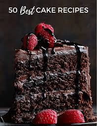
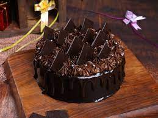
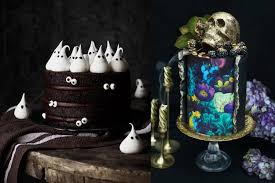
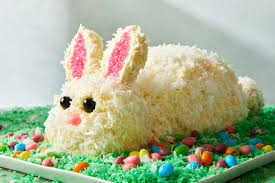

CAKE SHOP
Cake is a flour confection made from flour, sugar, and other ingredients and is usually baked.

Groundnut cake
Groundnut cake contains around 38-45% protein, making it an excellent source of protein for vegetarians and vegans.

Black Forest
Is typically made with a light chocolate sponge cake, soaked with cherry syrup and cherry brandy (Kirsch), then layered with whipped cream and cherries.

Chocolate Cake
'Chocolate Cake' is about how much a young boy loved chocolate cake and how one time he ate an entire cake in the middle of the night. .

Black Cake
Black Cake is a story about relationships—between parents and siblings and friends and lovers.

Coconut Cake
The Coincidence of Coconut Cake is the story of Lou and Al, of chef and food critic.